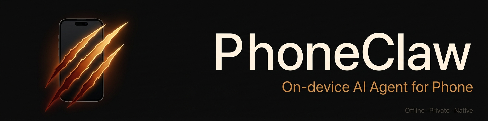

What is PhoneClaw?
PhoneClaw is a mobile-native local AI Agent framework for phones and edge devices. Its iOS runtime runs on-device models and native iOS Skills on the phone.
Mobile-native local AI agent framework
A local-first AI Agent framework for phones and edge devices, with on-device models, native iOS Skills, Live / LiveLand interaction, and optional Mac Gateway inference.
PhoneClaw is built for mobile devices, native mobile capabilities, and phone-first local agent workflows. PhoneClaw (this project) is unrelated to the Android automation repo "rohanarun/phoneclaw" or the "phoneclaw" GitHub organization. Android app-store search results may also show a separate app with the same name.
Core facts
PhoneClaw is easiest to understand as a phone runtime: local models, native Skills, permission-scoped data access, and optional LAN inference.
PhoneClaw is a mobile-native local AI Agent framework for phones and edge devices. Its iOS runtime runs on-device models and native iOS Skills on the phone.
Use natural language for Calendar, Reminders, Contacts, Clipboard, HealthKit summaries, image understanding, voice and LIVE mode, LiveLand, translation, Web Search, and Mac Gateway.
Chat, images, and personal data stay on the device by default. Web Search, URL reading, and Mac remote inference run when the user selects those capabilities.
The runtime handles mobile memory budgets, resumable model downloads, scoped permissions, Skill routing, phone entry points, Live interaction, and LAN-based edge inference.
Phone runtime
PhoneClaw brings local inference, native data sources, permission prompts, model state, and Live interaction into one mobile Agent runtime.
The phone stays the center of the agent experience: chat, voice, camera, widgets, Shortcuts, Control Center, Dynamic Island, and LiveLand all route back to the same local task flow.
Skills connect natural language to Calendar, Reminders, Contacts, Clipboard, HealthKit, translation, images, and explicit Web Search through mobile OS permissions.
A paired Mac can provide local-network inference for heavier tasks while the phone keeps the interaction surface, Skills, permissions, and task state.
Product
PhoneClaw treats the phone as the agent runtime for local inference, native Skills, permission checks, model downloads, memory budgeting, and Live interaction modes.

Calendar, Reminders, Contacts, Clipboard, HealthKit, translation, images, and explicit Web Search.

Voice, camera-aware LIVE mode, widgets, Shortcuts, Control Center, and Dynamic Island status.

Model switching, resumable downloads, cache cleanup, history trimming, and local memory policy.
Pair a Mac over LAN to use Ollama, Codex CLI, or Antigravity CLI while the phone keeps the agent experience.
Agent stack
The framework combines mobile entry points, Skill-aware planning, native iOS tools, local models, and optional LAN inference into one runtime.
Text, voice, images, LIVE camera, widgets, Shortcuts, Control Center, and LiveLand entry points.
File-driven Skills, scoped tool lists, argument extraction, clarification, and multi-turn task handling.
Calendar, Reminders, Contacts, Clipboard, HealthKit, Web Search, and device-local summaries behind permission gates.
LiteRT local models for the fully offline path, with optional Mac Gateway for heavier models on a trusted local machine. PhoneClaw's on-device runtime is Google LiteRT (running Gemma 4 E2B / E4B) and MiniCPM-V 4.6 — not Apple MLX.
Data flow
The privacy page expands this into a full table. The summary below keeps the homepage specific and crawlable.
Default inference, native Skill calls, Calendar, Reminders, Contacts, Clipboard, HealthKit summaries, images, and chat.
Realtime Web Search and opening a public URL send the request to the search provider or target website.
When paired, the request goes to your Mac on the LAN. Ollama stays there; CLI providers follow their own policies.
Mac Gateway
PhoneClaw Gateway turns a Mac on the same Wi-Fi into an optional local inference source. The phone keeps the chat UI, Skills, permission model, and task flow.
Deep dives
These pages give developers concrete implementation detail behind the product claims.
How PhoneClaw is designed from mobile permissions, memory budgets, phone entry points, and edge inference.
LiteRT-LM, MiniCPM-V 4.6, mobile memory limits, and how model choice shapes local agent workflows.
File-driven Skills, tool allowlists, permission boundaries, and local tool calling on the phone.
Dynamic Island, widgets, voice, camera, and mobile task status in PhoneClaw's mobile runtime.
Concise answers about product identity, privacy, mobile agent architecture, models, Skills, and Mac Gateway.
Languages
PhoneClaw ships product localization in zh/en/ja, with dedicated landing pages for readers who prefer Chinese or Japanese.
中文介绍 PhoneClaw 的手机端 Agent 运行时、端侧模型、原生 Skills、隐私边界和 Mac Gateway。
Japanese product overview for the local phone runtime, on-device models, native Skills, data flow, and Mac Gateway.
A compact machine-readable summary of the project, models, Skills, data flow, and public links.